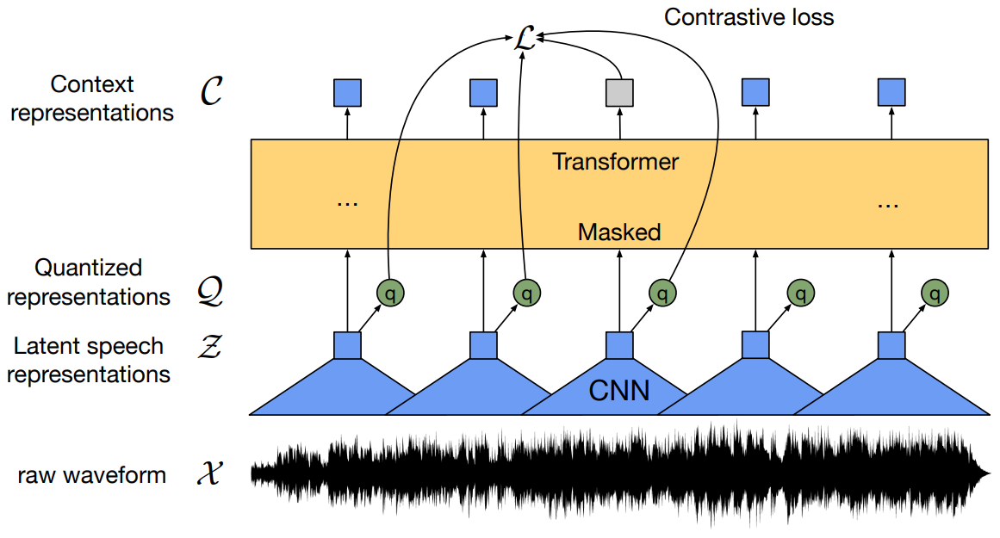
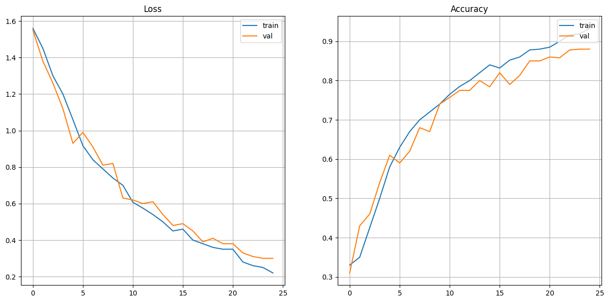
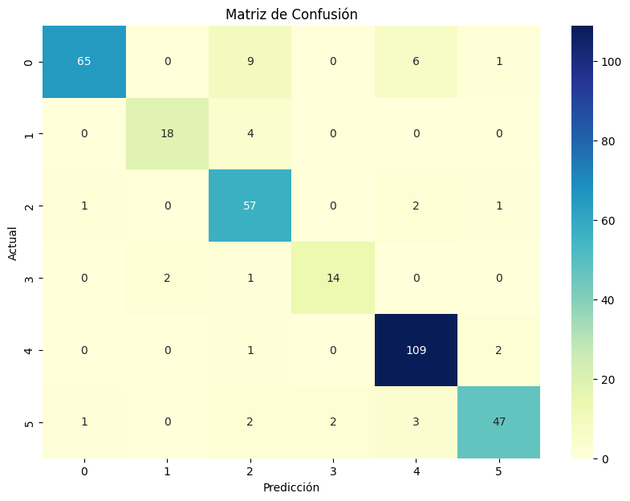

Spanish Speech Emotion Recognition
Predicción de emociones en el habla (SER) en español con un 89.20% de precisión, realizando Fine-Tuning al modelo wav2vec2.
Resultados del Modelo
| Audio | Emoción Predicha |
|---|---|
| Tristeza | |
| Enojo | |
| Miedo | |
| Felicidad | |
| Sopresa |
Desarrollo del proyecto
1. Bases de Datos
Para entrenar y ajustar el modelo, se emplearon las bases de datos MESD, EmoMatchSpanishDB y spanishMeaCorpus.
2. Wav2Vec2
Este proyecto utiliza el modelo Wav2Vec2-XLSR-53-Large - Spanish para el reconocimiento de emociones. El modelo está ajustado para clasificar las siguientes emociones: Alegría, Tristeza, Enojo, Miedo, Neutral, Disgusto.
3. Resultados
El modelo alcanza una precisión del 89.20% en el conjunto de prueba.

